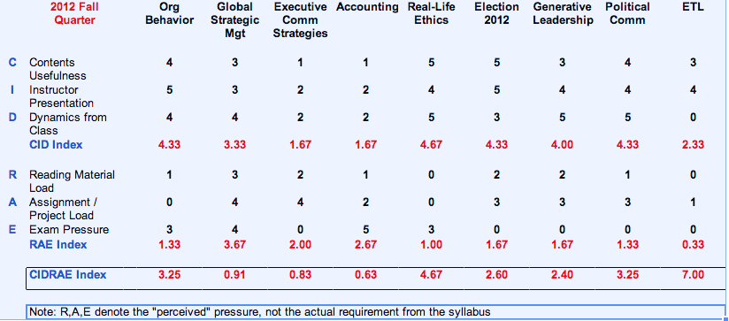

COASSF#37 - Fall Quarter Course Final Evaluation
My final evaluation for the Fall Quarter courses, following the CIDRAE framework I developed in the summer. It's a somewhat scientific approach to validate my favorite courses: Real-life Ethics, Election 2012, Political Communication, Organization Behavior, and Generative Leadership.
My final group presentation in Executive Communication was critiqued by several judges of local Sloan alumni. We had a pleasant chat with one of the judges after the team presentation, a young Sloan alumni with curly hair, who gave us some thoughtful feedback. After getting through the business stuff our conversation went casual and off the path. Seemingly randomly he asked who had taken Real-Life Ethics. I identified myself and went on a lengthy and passionate speech of flowery praise about how much I enjoyed that class thoroughly and loved the instructor Mark Leslie.
At the end of my speech, he smiled at me, I'm glad to hear that, Mark is my father.
.....o....k.
for an overview and introduction of CIDRAE, please read here: | - to compare to the similar evaluation of my Summer Quarter courses, please read here: | - to compare to the interim evaluation of my Fall Quarter courses, please read here:
